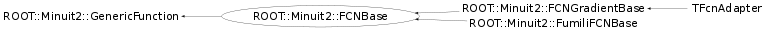

Function Members (Methods)
This is an abstract class, constructors will not be documented.
Look at the header to check for available constructors.
public:
| virtual | ~FCNBase() |
| virtual double | ErrorDef() const |
| virtual double | operator()(const vector<double>& x) const |
| ROOT::Minuit2::FCNBase& | operator=(const ROOT::Minuit2::FCNBase&) |
| virtual void | SetErrorDef(double) |
| virtual double | Up() const |
Class Charts
{kind=link}
{kind=link}
{kind=link}
{kind=link}

Function documentation
double operator()(const vector<double>& x) const
The meaning of the vector of parameters is of course defined by the user,
who uses the values of those parameters to calculate his function Value.
The order and the position of these parameters is strictly the one specified
by the user when supplying the starting values for minimization. The starting
values must be specified by the user, either via an std::vector<double> or the
MnUserParameters supplied as input to the MINUIT minimizers such as
VariableMetricMinimizer or MnMigrad. Later values are determined by MINUIT
as it searches for the Minimum or performs whatever analysis is requested by
the user.
@param par function parameters as defined by the user.
@return the Value of the function.
@see MnUserParameters
@see VariableMetricMinimizer
@see MnMigrad
double ErrorDef() const
Error definition of the function. MINUIT defines Parameter errors as the
change in Parameter Value required to change the function Value by up. Normally,
for chisquared fits it is 1, and for negative log likelihood, its Value is 0.5.
If the user wants instead the 2-sigma errors for chisquared fits, it becomes 4,
as Chi2(x+n*sigma) = Chi2(x) + n*n.
Comment a little bit better with links!!!!!!!!!!!!!!!!!
{return Up();}double Up() const
Error definition of the function. MINUIT defines Parameter errors as the
change in Parameter Value required to change the function Value by up. Normally,
for chisquared fits it is 1, and for negative log likelihood, its Value is 0.5.
If the user wants instead the 2-sigma errors for chisquared fits, it becomes 4,
as Chi2(x+n*sigma) = Chi2(x) + n*n.
\todo Comment a little bit better with links!!!!!!!!!!!!!!!!! Idem for ErrorDef()
void SetErrorDef(double )
add interface to set dynamically a new error definition
Re-implement this function if needed.
{}